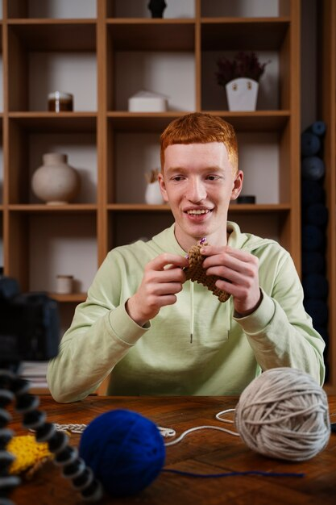
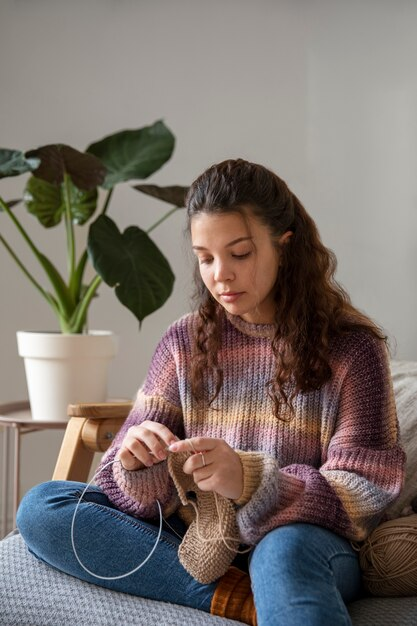
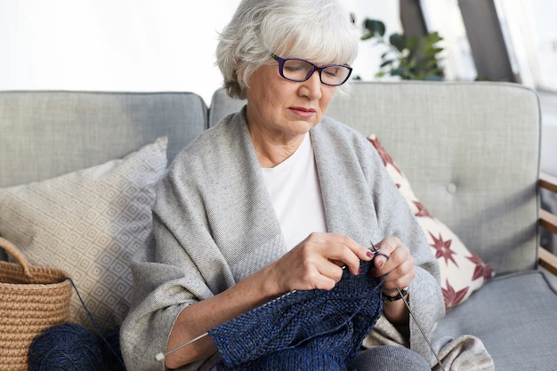
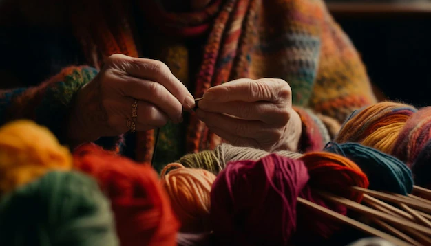
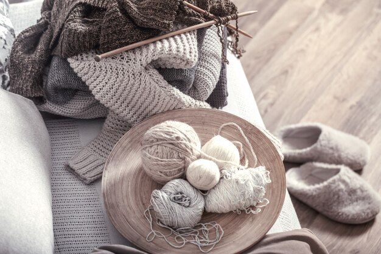
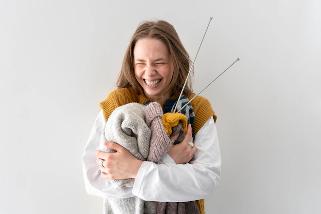

-
Her kan du se to stykker som kooooooser seg masse. Strikking skaper glede!
Strikking kan du gjøre hvor som helst.
Se så god og varm Turid er!
Match garnet med neglene😍
-

- 
- 
Oscar har kjøpt seg nytt garn på tilbud. Et hot tips er å kjøpe garn på black friday!
Sigmund liker ikke å strikk, men han ser gjerne på. I går vant han en sjakkturnering. Han er Norges neste Magnus Karlsen.
Sigrid er en fast gjest
-
- 
- 
- 
- 
The one and only Albertine.
Farger, farger FARGER.🍅
Noen går for den moderne varianten, lyse naturlige farger.
Sheeeeeeeeeeeeesh Fride elsker masse garn. Men pass på, hun er en drapsmaskin med strikkepinner.